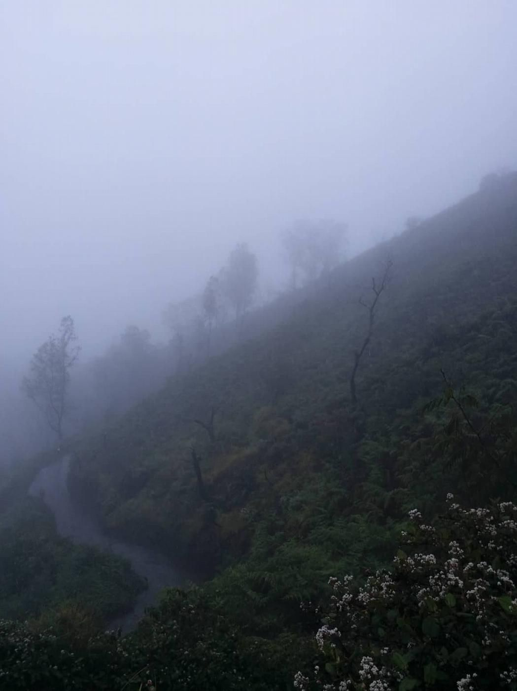

Global Volunteer
Muốn kể một chút về chuyện mình tham gia dự án Global Volunteer
(Global Volunteer là một chương trình tình nguyên quốc tế của tổ chức sinh viên toàn cầu lớn nhất thế giới - AIESEC. Một chương trình khá uy tín của một tổ chức rất uy tín)
Trước khi mình chia sẻ về 6 tuần mình sinh sống và làm tình nguyện tại nước ngoài, mình muốn đề cập đến kết quả mình nhận được từ chuyến đi dài ngày này. Không gì ngoài hai từ: thay đổi. Thay đổi rất nhiều. Nhưng toàn bộ sự thay đổi này đều là về suy nghĩ. Đơn giản vì 1 tháng rưỡi không bao giờ là đủ để thay đổi một thói quen, một tính cách hay một quan điểm sống cả. Nhưng nó sẽ là rất đủ để tác động mạnh mẽ đến giai đoạn đầu tiên của tất cả mọi cuộc hành trình: ý tưởng.
Mình quyết định lựa chọn đi Global Volunteer như thế nào?
Mình đã biết đến chương trình này từ những ngày năm nhất nhưng rất nhiều nỗi sợ ngăn mình nộp đơn. Rồi mình lại là một đứa sống không có plan mà chỉ dựa vào lực hấp dẫn nên việc đăng kí đi tình nguyện này cũng chỉ là một lực hấp dẫn do thằng bạn hối thúc. Rồi đùng một cái con bạn cùng nhà cũng kêu đi, thế là động lực được nhân đôi, công thêm với niềm tin rằng đây là sẽ là sự kiện bước ngoặt khiến mình được “lột xác”, mình sẽ thực sự tự lập và hoàn toàn tự tin. Cho đến giờ mình vẫn cảm thấy mình may mắn vì những sự kiện đầy ngẫu nhiên này lại xảy ra nối đuôi nhau như trao cho mình chiếc chìa khóa buộc mình phải mở cảnh cửa. Và thế giới phía sau cánh cửa thật sự quá đỗi diệu kì
Kinh nghiệm cá nhân: đây là hoạt động mà mình tin bất kì ai cũng nên trải nghiệm một lần trong thời sinh viên. Hai lợi ích rất rõ ràng ngay từ cái tên Global Volunteer: được sống ở nước ngoài + được làm tình nguyện. Công thêm những lợi ích tủa ra từ hai giá trị này thì ai cũng có thể vẽ ra được. Chẳng hạn như tìm hiểu màu sắc văn hóa của một đất nước, giao tiếp tiếng Anh, tạo ra những giá trị tích cực cho cộng đồng,…
Thời điểm tốt nhất để đi là vào cuối năm hai hoặc đầu năm ba. Những lí do dựa theo quan điểm của mình được giải thích theo hai cách. Theo cách loại trừ thì khi bạn chỉ mới năm nhất, kiến thức cũng như cảm xúc còn khá non trẻ, sẽ rất khó để bạn thật sự trải nghiệm trọn vẹn thời gian 6 tuần khi mà bạn vẫn chưa có khả năng đánh giá điều gì là đúng, là sai. Mình nghĩ năm nhất vẫn là khoảng thời gian bạn còn chưa hiểu rõ về bản thân, mà Global Volunteer thì đòi hỏi một chút độ cứng. Nếu thời điểm bạn đi rơi vào cuối năm ba hoặc năm tư thì mình e là bạn lại càng không trải nghiệm trọn vẹn, vì khi đó bạn đã đạt được độ chín và yêu cầu của bạn cao hơn khá nhiều so với những gì mà Global Volunteer có thể mang lại. Vậy nên cuối năm hai, đầu năm ba là thời điểm cân bằng. Giải thích theo cách trực tiếp thì vào năm hai, năm ba, bạn chưa thật sự vướng bận bởi những dự định về việc làm hay những kế hoạch cho tương lai, và thời điểm này bạn đã hình thành những giá trị của bản thân, vì vậy chuyến đi này thực sự là một cuộc trải nghiệm của tuổi trẻ và sẽ giúp ích rất nhiều để định hình lại những giá trị bạn có cũng như tìm hiểu thêm về những khía cạnh mới của bạn.
Lựa chọn dự án thế nào?
Việc lựa chọn dự án để đi trong một nùi những dự án đăng tải cũng dựa vào lực hấp dẫn, là bé em phó chủ tịch chương trình Global Volunteer lọc cho mình vài dự án rồi cứ thế mình phóng lao theo. Dự án mình chọn là Social Entrepreneurship 2nd wave 2018 tại Indonesia, cụ thể tại thành phố Bandung - thành phố lớn thứ 3 của Indo. Mỗi người sẽ có một tiêu chuẩn lựa chọn dự án khác nhau. Về phần mình, tiêu chuẩn mình đưa ra là chi phí không quá cao, trong khu vực Đông Nam Á, không phải là dạy học, liên quan đến kinh tế.
Kinh nghiệm cá nhân: thực sự đặt tâm sức vào giai đoạn này. Bạn sẽ không muốn lãng phí 6 tuần chỉ để than vãn về sự không-hài-lòng trong suốt dự án đâu. Và ắt hẳn là bạn không muốn apply vào các dự án dọn dẹp vệ sinh môi trường khi mà bạn yêu tha thiết việc sử dụng bộ não để tạo ra giá trị. Việc lựa chọn sẽ vô cùng dễ dàng khi bạn đặt ra những tiêu chí ngay từ đầu. Một bài học rất xương máu khác mà những tình nguyện viên đều có thể muốn chia sẻ cho bạn: hãy chọn dự án ở những thành phố lớn. Thế này, những người tổ chức tất cả những dự án tình nguyện này cho bạn đều là thành viên của AIESEC, bạn có thể đoán họ đều là sinh viên, và theo logic thì những thành phố lớn là nơi tập trung những trường đại học top đầu, và cũng theo logic thì sinh viên của những trường đại học này thường rất xuất sắc trong cả học tập và hoạt động ngoại khóa, vì vậy bạn có thể “trao thân” cho những nhân vật này dẫn lối bạn trong 6 tuần. Những dự án ở thành phố nhỏ hoặc các vùng quê rất thường xuyên bị đánh thấp về mức độ chuyên nghiệp vì điều kiện sinh hoạt cung cấp cho các tình nguyện viên nước ngoài kém và chất lượng tổ chức các hoạt động trong suốt dự án thì thường khá thấp (nếu không muốn nói là tệ). Không chỉ là trao thân gửi phận trong 6 tuần ở một đất nước lạ hoắc mà còn là đem tiền sang đốt nữa nên đừng dại dột nhé
Giai đoạn apply như thế nào?
May mắn thứ hai với mình là bé Thùy thật sự đã thúc mình rất nhiều trong việc điền cho xong cái đơn, quá trình ngu ngốc này của mình hình như kéo dài tận 1 tháng. Né tránh nỗi sợ vốn đã là thế mạnh của mình, thế nên mình đã trì hoãn hết lần này đến lần khác nhưng cuối cùng mình cũng đã tìm được điểm dừng. Nhân tiện đây xin cảm ơn em vì đã rất kiên nhẫn với chị.
Quá trình apply không hề phức tạp, chỉ là điền một số câu hỏi và upload CV của mình lên là ok. Sau đó, phía AIESEC của nước bạn sẽ hẹn lịch phỏng vấn qua skype nếu hồ sơ được thông qua. Việc phỏng vấn này chỉ là để kiểm tra 2 tiêu chí. Một là trình độ tiếng Anh và hai là xác nhận mục đích của bạn cho chuyến đi là vì tình nguyện thay vì đi du lịch. Thật ra có một sự thật là chẳng ai rớt cả, trừ khi bạn hoàn toàn đi ngược lại cả hai tiêu chí trên. Vì bạn biết đấy, cung và cầu lúc này đều nằm trên 2 cán cân thăng bằng.
AIESEC host sẽ gửi cho bạn một list những câu hỏi thường gặp (và đúng là gặp thật), bạn cũng cần đọc thêm thông tin về đất nước bạn đến, thành phố bạn đến và dự án bạn chọn. Khâu chuẩn bị cho phỏng vấn chỉ có thế. Trong thời gian phỏng vấn, chẳng ai đánh đố bạn cả, chỉ như một buổi nói chuyện giữa hai người lạ ở hai đất nước không cùng một thứ ngôn ngữ thôi. Còn về tiếng Anh ấy, đừng lo về nó, giao tiếp cơ bản là hoàn toàn đủ xài rồi. Dự án của bạn mình còn có bạn chẳng biết nói tiếng Anh.
Cuối cùng là đợi kết quả từ mail và sau đó là bắt đầu công cuộc chuẩn bị rần rần cho chuyến xuất ngoại dài hơi, nào là xin visa, đi đổi tiền, sắm sửa linh tinh, book các thể loại vé,…
6 tuần nên trải nghiệm thế nào cho trọn vẹn?
Như câu nói được chia sẻ đầy rẫy trên mạng, yếu tố ngoại cảnh không quan trọng, quan trọng là bên trong bạn ấy, bạn lĩnh hội được gì, bạn làm những gì.
Bạn sẽ có những mục tiêu cho chuyến đi này - thứ mà bạn chắc chắn phải đạt được, vậy thì đừng lãng quên nó, đừng thả trôi bản thân lệch ra khỏi quỹ đạo bạn đã vẽ.
Mình đã đặt mục tiêu cho chuyến đi lần này là sự tự lập, khả năng giải quyết tình huống và tính kỉ luật. Vậy những điều mình làm là gì để tiến tới mục tiêu đó?
Khi có thời gian rảnh ngoài dự án, mình rất ít khi ở nhà host mà thường xuyên ra ngoài để va đập thật nhiều với cuộc sống ở bên này. Mình chắc chắn với bạn một điều là nếu bạn cứ nằm nhà thì sẽ chẳng có tình huống nào cho bạn giải quyết hay bạn phải đưa ra những quyết định nào khó khắn đâu, trừ việc nhà host hỏi bạn muốn ăn gì và bạn phải “khó khăn” lựa chọn món.
Vào cuối tuần, thay vì nằm xem “thư ký Kim”, tụi mình thường lập kế hoạch đi chơi, tụi mình gọi là Explore Bandung và đúng là giẫm shit rất nhiều lần. Việc bất đồng ngôn ngữ đúng là rảo cản cao như bức tường Mexico đòi hỏi bạn phải rất kiên nhẫn và lanh lợi. Lúc tụi mình đến một địa điểm du lịch nổi tiếng ở Bandung, mọi thứ rất bình yên, bắt một chuyến Grab car từ trung tâm thành phố đến địa điểm này là an vị rồi. Nhưng shit đầu tiên thì cũng sớm tới: bạn bán vé không biết nói tiếng Anh. Shit thứ hai mới là cú chốt, không có xe về, lúc đó là gần 5h chiều, tụi mình không thể bắt được grab ở cái nơi “khỉ ho cò gáy” này, và tụi mình cũng không thể tìm được ai có thể nói tiếng Anh để hỏi cách quay về trung tâm thành phố. Lúc này có một bác tài xế cứ dụ tụi mình lên cây xe Angkor của bác (well, well, well bác nói tiếng Indonesia ). Sau nỗ lực không thành của việc gọi cho nhà host và buddy, tụi mình quyết định leo lên đại vì mình nhìn thấy trên xe cũng có phụ nữ và trời thì sắp tối. Khi leo lên xe, con bạn mình bất lực hét “Is there anyone here that can speak English?” và thế rồi thiên thần của tụi mình xuất hiện. Anh ấy là tour guider ở Jakarta (thủ đô của Indonesia) và cũng đang cần về trung tâm thành phố để bắt tàu đến Jakarta. Thế là anh đã dắt tụi mình về đến tận nhà.
Tụi mình có một bài học nhớ đời về việc plan kĩ quan trọng như thế nào để hạn chế shit. Và một điều quan trọng hơn nữa, đó là luôn nghĩ về mục tiêu. Tin mình, việc liên tục di chuyển là một nỗ lực (đánh gục sự lười, cơn buồn ngủ và thoát khỏi vùng thoải mái). Nếu bạn không có mục tiêu cho cuộc hành trình, bạn không thể lết ra khỏi cái giường (rất êm) ở nhà host để lăn lộn đâu.
Những trải nghiệm sâu sắc nhất mà tụi mình có hầu như đều nhờ vào những chuyến đi mà tụi mình tự build chứ không phải là từ những chương trình của dự án. Vì những trải nghiệm tụi mình tự plan thường là lên bờ xuống ruộng, còn của dự án thì khá suôn sẻ. Mình sẽ chia sẻ một chút về dự án, tụi mình chỉ có hai điểm gặp mặt là quán cà phê và làng. Quán cà phê là nơi để mình brainstorm còn làng là nơi tụi mình thực thi những điều đã brainstorm. Tụi mình sẽ lên kế hoạch phát triển một cái business cho dân làng và sau đó là hướng dẫn dân làng, hỗ trợ dân làng phát triển kế hoạch đó. Số tiền thu được từ business này sẽ giúp dân làng xây dựng cơ sở vật chất mà làng còn thiếu hoặc đã hư hỏng. Vậy nên những công việc trong dự án chỉ đòi hỏi bạn kĩ năng teamwork, tiếng Anh, tính trách nhiệm và kiến thức về division mà bạn apply (Sales, Marketing, Finance, Production). Nếu mục tiêu của bạn nằm ngoài những yếu cầu mà mình đã đề cập ở trên thì bạn chắc chắn phải tự xây dưng cho mình một kế hoạch riêng bên cạnh dự án. Kế hoạch của mình chính là “không ngừng di chuyển”.
Đi làm đồng trên ngọn đồi
Borobudur - một những di tích Phật giáo lớn nhất thế giới
Đi thật xa thành phố Yogyakarta
Thành phố Banyuwangi - nơi đón măt trời đầu tiên trên đảo Java

Đường lên núi lửa Ijen - nơi phát ra ngọn lửa xanh từ mỏ quặng lưu huỳnh
Mình sẽ kể bạn nghe về kế hoạch “không ngừng di chuyển” của mình.
Mồi dự án đều sẽ cho phép các tình nguyện viên một tuần off, thời điểm này thường nằm ở giai đoạn gần cuối của dự án. Thay vì chọn một tuần nghỉ dưỡng như các EPs (tình nguyện viên quốc tế) khác, tụi mình lên hẳn một kế hoạch đi 3 thành phố trong vòng 7 ngày. Không chọn đi máy bay, không chọn ở khách sạn nhiều sao (không phải ngàn sao), tụi mình chọn đi tàu và xe, ngủ ở homestay. Có những ngày tụi mình không hề chợt mắt, thời gian ngủ được tận dụng trên những chuyến xe, chuyến phà và chuyến tàu. Không nằm nghỉ tắm nắng tại những bãi biển, tụi mình leo núi lửa, đuổi theo mặt trời để kịp ngắm bình minh, hoàng hôn.
Tất cả đó đều là sự lựa chọn.
Vậy bạn nhận ra điều gì từ tất cả những câu chuyện của mình - điều sẽ giúp bạn trải nghiệm trọn vẹn 6 tuần tình nguyện quốc tế. Chỉ hai chữ thôi: mục tiêu. Nhưng bạn không một mình khi thực hiện mục tiêu này đâu. Buddy của bạn ở AIESEC host sẽ có một cuộc gặp với bạn trước khi bạn đi để giúp bạn tìm hiểu về mục tiêu và những kế hoạch bạn dự định sẽ làm ở đó để đạt được mục tiêu ấy. Nhưng theo kinh nghiệm của mình ý, mục tiêu thì không thay đổi rồi nhưng cái kế hoạch thì thật sự trầy trật, vì bạn plan dựa trên tưởng tượng về cuộc sống ở bên đó nhưng thực tế khi tới nơi thì khác nhiều lắm. Bên cạnh buddy, bạn còn có những người bạn cũng sẽ có cùng mục tiêu với bạn ở bên ấy, khi duyên đến, bạn sẽ có một team cực awesome cùng bạn đến đích.